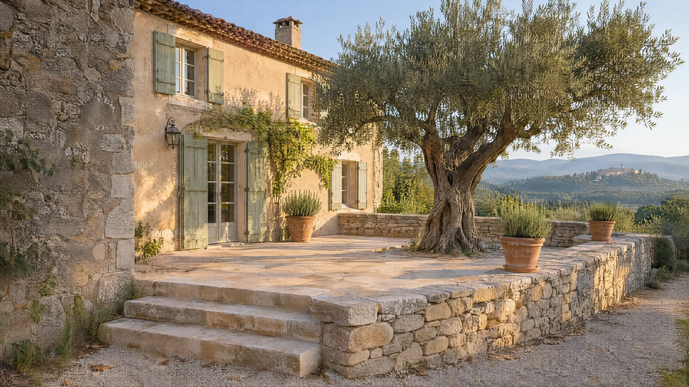
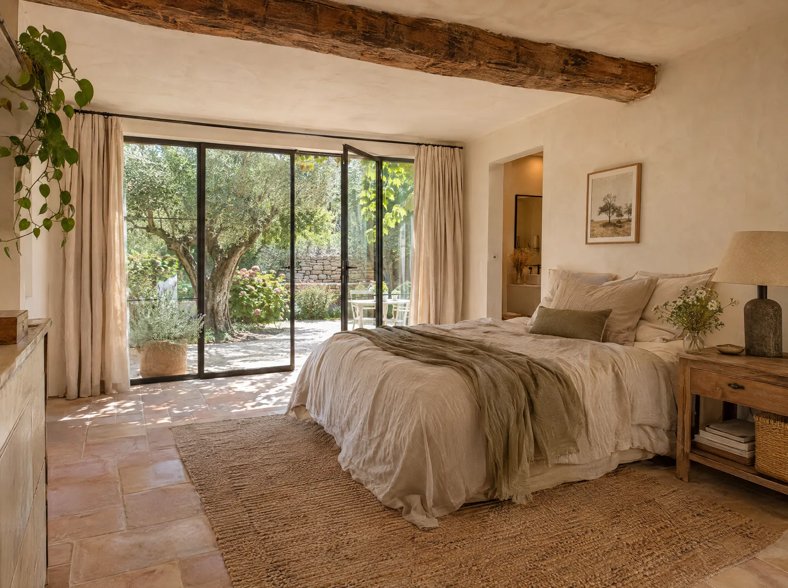
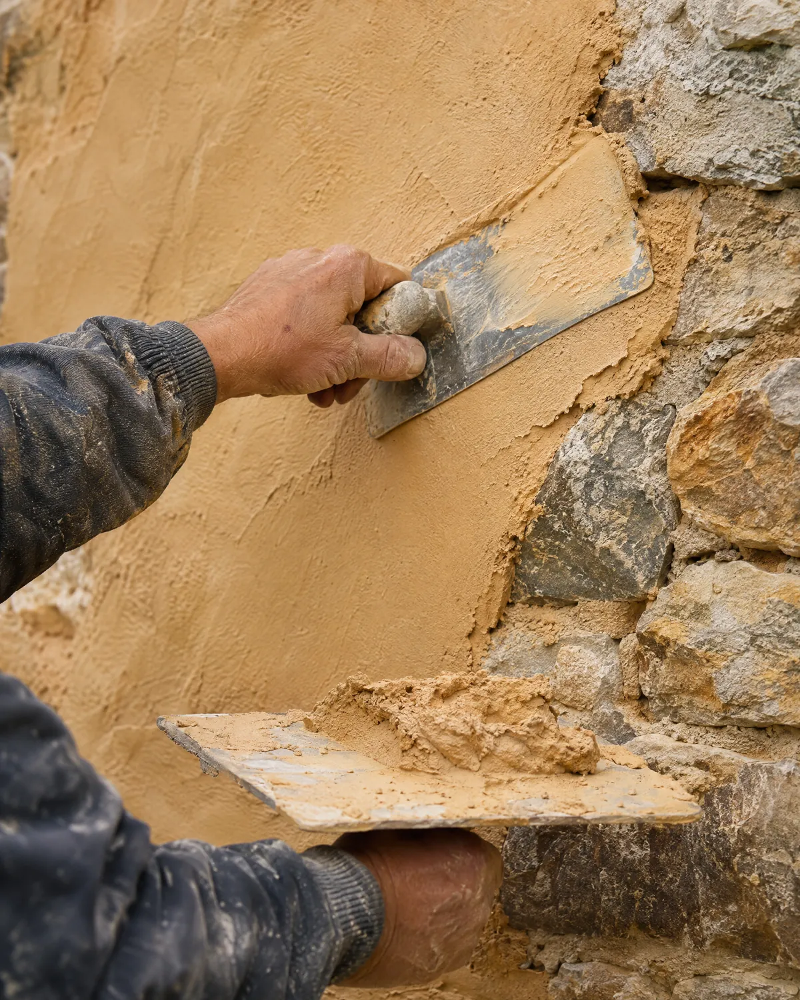

LG Maçonnerie Logan Gibert et son équipe
Maçon à Grambois et dans tout le Luberon
Rénovation, terrasses, salles de bain et maçonnerie : un travail soigné, recommandé par nos clients.
5,0 sur Google · 23 avis« Ma terrasse est magnifique ! »
Margot C. · avis Google
« Travail soigné, minutieux et d'excellente qualité. »
Aline · avis Google
« A su transformer notre garage en une magnifique suite parentale. »
Emilie G. · avis Google
« …et la propreté du chantier irréprochable à la fin. »
Alain V. · avis Google
« …des mains en or ! »
Cécile B. · avis Google
Lun – ven 7h30 – 16h30 · Sam 7h30 – 14h
- 5,0 sur Google, 23 avis
- Chantier proprerendu nettoyé à la fin
- Ponctuelsà l'heure, du début à la fin
- Devis gratuitvisite et conseils sur place
- LuberonGrambois, Pertuis, pays d'Aigues
Ce que nous construisons, rénovons et réparons.
Des petites réfections aux rénovations complètes, nous prenons en charge la maçonnerie de votre maison, à l'intérieur comme à l'extérieur.
-
01
Rénovation complète
Appartements et maisons, du gros œuvre aux finitions : murs, sols, enduits, ouvertures. Un seul interlocuteur, du premier rendez-vous au chantier rendu.
Demander un devis -
02
Terrasses & extérieurs
Terrasses dallées ou en pierre, murets, escaliers, soubassements : des extérieurs solides, faits pour le soleil et le climat du Luberon.
Demander un devis -
03
Salles de bain
Douche à l'italienne, pose de receveur, carrelage, reprise des murs et des sols : votre salle de bain refaite proprement, sans mauvaise surprise.
Demander un devis -
04
Garage transformé en pièce de vie
Votre garage devient une chambre, une suite parentale ou un bureau : ouverture de la façade, sol, murs et finitions.
Demander un devis -
05
Dalles & planchers béton
Remplacement de vieux planchers bois par une dalle béton, dalles de garage ou de terrasse : une base saine et bien plane pour la suite.
Demander un devis -
06
Construction & extensions
Agrandissement, annexe, murs : nous construisons dans le style de votre maison, des fondations jusqu'au toit.
Demander un devis -
07
Façades, toiture & étanchéité
Enduits, encadrements, soubassements, rénovation de toiture et reprise d'étanchéité : votre maison protégée pour longtemps.
Demander un devis
Avant, après.
Faites glisser le curseur pour voir la transformation.

Avant AprèsUn garage brut devenu une suite parentale lumineuse, ouverte sur le jardin.
Nos réalisations
Quelques chantiers récents à Grambois et dans le Luberon.
Nos clients reviennent.
Beaucoup de nos clients nous rappellent pour leurs travaux suivants. C'est la plus belle preuve qu'un chantier s'est bien passé.
Deuxième fois que je fais appel à eux pour des travaux et c'est toujours un bonheur ! Artisans sérieux, très professionnels et très belles finitions !
Réalisation très professionnelle parfaite et à un prix raisonnable ! Pour les prochains travaux nous ferons appel à leurs services bien entendu.
J'ai contacté ce professionnel d'après les avis positifs et je dois dire que ces derniers ont été confirmés par le travail effectué à mon domicile.
Votre chantier en 4 étapes
Une façon de travailler simple, que nos clients connaissent bien.
- 1
Visite et conseils
Je viens voir votre projet sur place, je vous écoute et je vous conseille sur la meilleure solution.
- 2
Un devis clair
Vous recevez un devis gratuit et détaillé, poste par poste, sans engagement.
- 3
Un chantier soigné
Nous travaillons avec rigueur et ponctualité, et vous savez toujours où en sont les travaux.
- 4
Un chantier rendu propre
À la fin, nous nettoyons tout : vous retrouvez votre maison propre, prête à vivre.

« Je viens voir chaque projet moi-même, et je reste votre interlocuteur jusqu'au dernier coup de balai. »
Pourquoi nous confier vos travaux
Je m'appelle Logan Gibert. Avec mon équipe, nous intervenons à Grambois et dans le Luberon, des petites réfections aux chantiers complets. Ce que nos clients disent de nous tient en cinq points.
Des finitions soignées
Le détail fait la différence, surtout sur la pierre et les enduits.
très belles finitions
Margot C.Un chantier propre
Un chantier bien tenu, et tout est nettoyé avant notre départ.
chantier laissé d'une propreté irréprochable
Cécile B.Ponctuels et sérieux
Nous arrivons à l'heure et nous tenons ce qui est prévu.
il est ponctuel et très agréable
AlineDe bon conseil
Nous vous proposons des solutions adaptées à votre maison et à votre budget.
source d'idées et de conseils
Cécile B.Un prix raisonnable
Un devis clair, détaillé, sans surprise en fin de chantier.
à un prix raisonnable
Pascal, de Grambois
Pour une fois que je fais réaliser un chantier et que je ne me dis pas « je n'aurais pas fait comme ça » ou « j'aurais fait mieux », je ne peux que les recommander !!
François K.
Professionnel ! Sérieux ! Ponctuel ! Chantier laissé d'une propreté irréprochable ! Logan est source d'idées et de conseils associé à un professionnalisme et un sérieux à toute épreuve + des mains en or !
Cécile B.
J'ai fait appel à LG maçonnerie pour la rénovation complète de mon appartement. Travail soigné, minutieux et d'excellente qualité. Logan travaille de manière efficace, il est ponctuel et très agréable.
Aline
Très professionnel et à l'écoute. A fait un super travail. De bon conseil. A su transformer notre garage en une magnifique suite parentale.
Emilie G.
J'ai fait appel à Logan pour refaire notre salle de bain et je suis très satisfaite du résultat. Sérieux, rigueur, professionnalisme !!
Sarah B.
Deuxième fois que je fais appel à eux pour des travaux et c'est toujours un bonheur ! Artisans sérieux, très professionnels et très belles finitions ! Je recommande sincèrement Logan et ses équipes. Ma terrasse est magnifique !
Margot C.
J'ai contacté ce professionnel d'après les avis positifs et je dois dire que ces derniers ont été confirmés par le travail effectué à mon domicile, travail rigoureux, soigné et la propreté du chantier irréprochable à la fin.
Alain V.
Réalisation très professionnelle parfaite et à un prix raisonnable ! Pour les prochains travaux nous ferons appel à leurs services bien entendu.
Pascal, de Grambois
À Grambois et dans tout le sud Luberon
Nous sommes installés à Grambois et nous intervenons dans les villages du pays d'Aigues et alentour. Votre commune n'est pas dans la liste ? Appelez-nous, on en parle.
- Grambois
- Pertuis
- La Tour-d'Aigues
- Cucuron
- Lourmarin
- Ansouis
- Mirabeau
- Manosque
- Aix-en-Provence
Carte © contributeurs OpenStreetMap
Demandez votre devis gratuit
Décrivez-nous votre projet en quelques lignes, ajoutez des photos si vous en avez : je vous rappelle pour en parler et fixer une visite.
- 06 46 05 23 33
- Lun – ven 7h30 – 16h30
Samedi 7h30 – 14h - 541 chemin du Thor
84240 Grambois
Devis gratuit et sans engagement
Merci, votre demande est bien envoyée.
Je vous rappelle rapidement pour parler de votre projet et fixer une visite.
Logan Gibert · 06 46 05 23 33